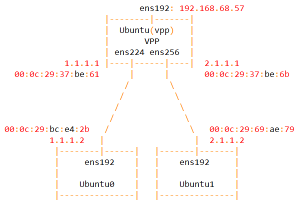
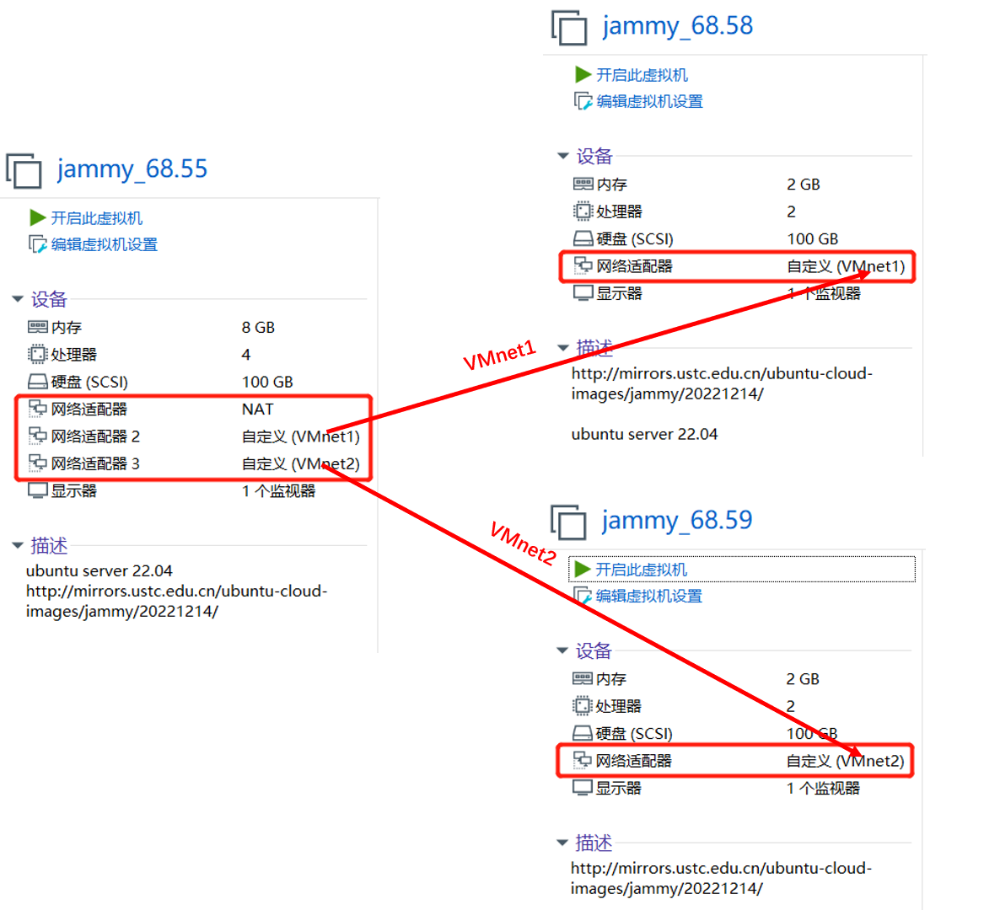
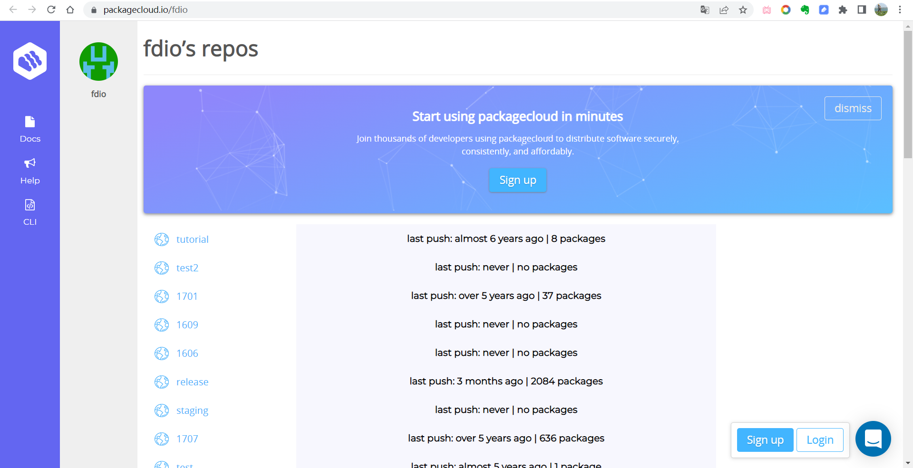
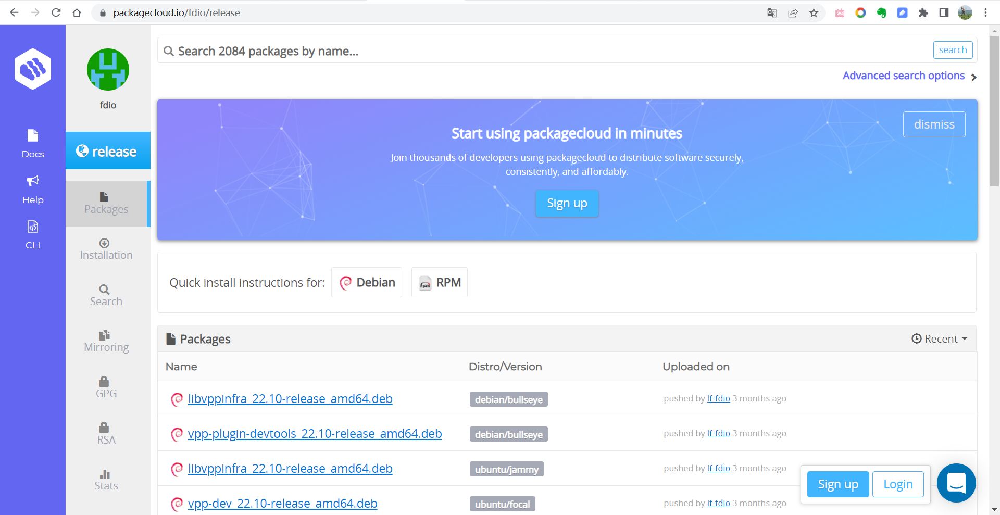
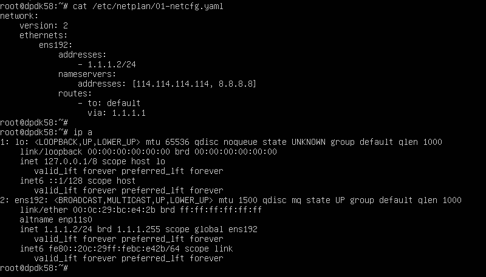
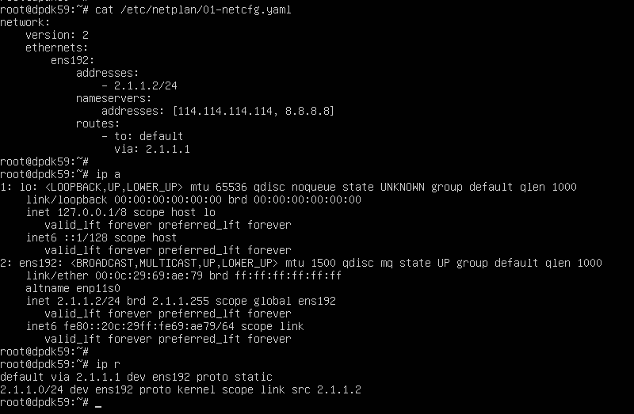
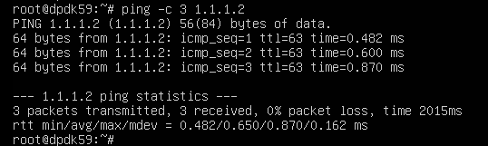
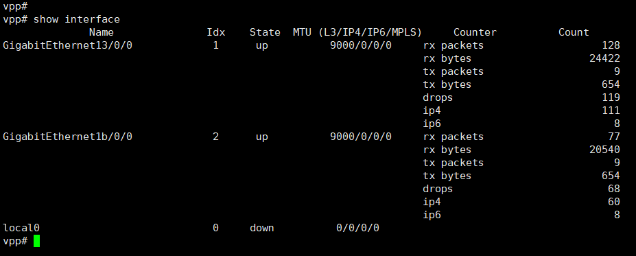
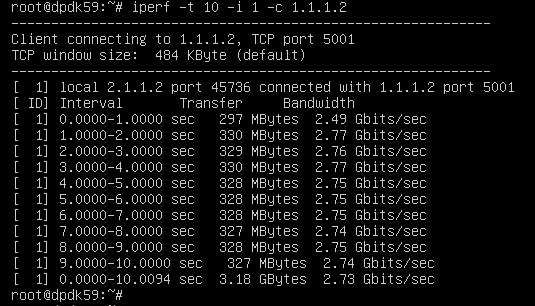
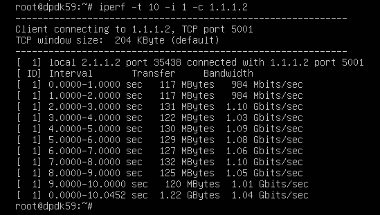

Subsections of VPPs
0. vpp-u2204
date: 2023-02-04
https://wiki.fd.io/view/VPP/Progressive_VPP_Tutorial
https://s3-docs.fd.io/vpp/22.10/
vpp u2204 vmware : 网卡均为vmxnet3


https://packagecloud.io/fdio


apt install driverctl
driverctl list-devices | grep vmxnet3
0000:0b:00.0 vmxnet3
0000:13:00.0 vmxnet3
0000:1b:00.0 vmxnet3
driverctl set-override 0000:13:00.0 vfio-pci # 重启后仍然绑定
driverctl unset-override 0000:13:00.0 # 解除绑定
dpdk-devbind.py -b vfio-pci 0000:13:00.0 # 重启后解除绑定
apt install dpdk dpdk-dev -y
## 22.10
curl -s https://packagecloud.io/install/repositories/fdio/release/script.deb.sh | sudo bash -vx
cat /etc/apt/sources.list.d/fdio_release.list
apt-get update
apt-get install vpp vpp-plugin-core vpp-plugin-dpdk
# apt-get install vpp-api-python python3-vpp-api vpp-dbg vpp-dev
# Uninstall the Packages
# apt-get remove --purge vpp*
# systemctl enable vpp
systemctl status vpp
vi /lib/systemd/system/vpp.service
ExecStartPre=-/sbin/modprobe vfio-pci
vi /etc/vpp/startup.conf
dpdk {
uio-driver vfio-pci
dev 0000:13:00.0
dev 0000:1b:00.0
}
systemctl daemon-reload && systemctl restart vpp && systemctl status vpp
vppctl show ver
vppctl
提示符：
vpp#
set interface state GigabitEthernet13/0/0 up
set interface state GigabitEthernet1b/0/0 up
set interface ip address GigabitEthernet13/0/0 1.1.1.1/24
set interface ip address GigabitEthernet1b/0/0 2.1.1.1/24
show interface
ubuntu0:

ubuntu1:

ubuntu0 与 ubuntu1 可以互相ping通。


ubuntu0:
iperf -s -i 1
ubuntu1:
iperf -t 10 -i 1 -c 1.1.1.2

dpdk有2-3G，网卡是10G
不用dpdk，重启后：
ip l s ens224 up
ip l s ens256 up
ip a a 1.1.1.1/24 dev ens224
ip a a 2.1.1.1/24 dev ens256
路由方式1G，这个对的。

clean:
ip a flush ens224
ip a flush ens256
ip l s ens224 down
ip l s ens256 down
0. vpp-qemu
date: 2023-02-04
# vm.xml
<interface type='bridge'>
<source bridge='br0'/>
<model type='vmxnet3'/>
</interface>
<interface type='bridge'>
<source bridge='br0'/>
<model type='vmxnet3'/>
</interface>
## HOST : 10.1.1.8
../startVMs/startvm.sh vpp_5.151 jammy-server-cloudimg-amd64.20221210.pw1-10.1.5.3.img 4 8
######### 0.prepare
apt update
apt -y full-upgrade
ln -sf ../usr/share/zoneinfo/Asia/Shanghai /etc/localtime
[ -f /var/run/reboot-required ] && reboot -f
######### 1. 启用rc.local
cat << EOF >> /etc/rc.local
#!/bin/bash
echo 1 > /sys/module/vfio/parameters/enable_unsafe_noiommu_mode
EOF
chmod +x /etc/rc.local
cat << EOF >> /lib/systemd/system/rc-local.service
[Install]
WantedBy=multi-user.target
EOF
cat /lib/systemd/system/rc-local.service
# 启用服务
systemctl enable rc-local
systemctl start rc-local
systemctl status rc-local
# 查看是否成功
cat /sys/module/vfio/parameters/enable_unsafe_noiommu_mode
echo "vfio-pci" > /etc/modules-load.d/95-vpp.conf
######### 2. hugepages
cat <<EOF >> /etc/sysctl.conf
vm.nr_hugepages = 2048
EOF
sysctl -p
######### 3. vpp && dpdk
lshw -businfo -c network
apt install dpdk dpdk-dev -y
## https://packagecloud.io/fdio
#curl -s https://packagecloud.io/install/repositories/fdio/release/script.deb.sh | sudo bash
curl -s https://packagecloud.io/install/repositories/fdio/2210/script.deb.sh | sudo bash
cat /etc/apt/sources.list.d/fdio_2210.list
apt update
apt install vpp vpp-plugin-core vpp-plugin-dpdk -y
# systemctl enable vpp
# systemctl disable vpp
systemctl status vpp
mkdir -p /var/log/vpp
cat /etc/sysctl.d/80-vpp.conf
vi /lib/systemd/system/vpp.service
ExecStartPre=-/sbin/modprobe vfio-pci
ExecStartPre=-/bin/bash -c 'echo 1 > /sys/module/vfio/parameters/enable_unsafe_noiommu_mode && sleep 2'
vi /etc/vpp/startup.conf
dpdk {
uio-driver vfio-pci
dev 0000:00:04.0
}
systemctl daemon-reload && systemctl restart vpp
## CPU0 100%
vppctl show ver
vppctl
show interface
apt install docker.io -y
docker pull ubuntu:22.04
vi Dockerfile
FROM ubuntu:22.04
RUN sed -i 's/archive.ubuntu.com/mirrors.ustc.edu.cn/g' /etc/apt/sources.list && \
sed -i 's/security.ubuntu.com/mirrors.ustc.edu.cn/g' /etc/apt/sources.list
RUN apt-get update -y && apt-get install -y tzdata && \
ln -sf /usr/share/zoneinfo/Asia/Shanghai /etc/localtime && \
dpkg-reconfigure -f noninteractive tzdata
RUN apt-get install dpdk kmod curl vim -y
RUN curl -s https://packagecloud.io/install/repositories/fdio/release/script.deb.sh | bash && \
apt-get update -y && apt-get install vpp vpp-plugin-core vpp-plugin-dpdk -y
RUN mkdir -p /var/log/vpp
### vpp v22.10-release
### dpdk 21.11
docker build -t amwork2010/vppdpdk:22.10 .
docker run --privileged \
-v /sys/bus/pci/devices:/sys/bus/pci/devices \
-v /sys/kernel/mm/hugepages:/sys/kernel/mm/hugepages \
-v /sys/devices/system/node:/sys/devices/system/node \
-v /lib/modules:/lib/modules \
-v /dev:/dev \
-it amwork2010/vppdpdk:22.10 bash
docker run --privileged \
-v /sys/bus/pci/devices:/sys/bus/pci/devices \
-v /sys/kernel/mm/hugepages:/sys/kernel/mm/hugepages \
-v /sys/devices/system/node:/sys/devices/system/node \
-v /lib/modules:/lib/modules \
-v /dev:/dev \
-d amwork2010/vppdpdk:22.10 sleep infinity
vi /etc/vpp/startup.conf
dpdk {
uio-driver vfio-pci
dev 0000:00:04.0
}
vpp -c /etc/vpp/startup.conf &
####
docker run --privileged \
-v /lib/modules:/lib/modules \
-d amwork2010/vppdpdk:22.10 sleep infinity
# 也可以banding , kmod ： the kmod package would provide modinfo, modprobe and other related tools.
# root@714c8d6fc89e:/# modprobe vfio-pci
# modprobe: FATAL: Module vfio-pci not found in directory /lib/modules/5.15.0-58-generic
# so: -v /lib/modules:/lib/modules
# vpp 启动 带不到dpdk网卡，docker stop ， 再start，再 vpp -c /etc/vpp/startup.conf & 才可以banding
0. vpp-rocky87
date: 2023-02-04
https://wiki.fd.io/view/VPP/Progressive_VPP_Tutorial
https://s3-docs.fd.io/vpp/22.10/
Rocky Linux 8.7
# rocky87
vi /etc/default/grub
GRUB_CMDLINE_LINUX="........... default_hugepagesz=1G hugepagesz=1G hugepages=4 iommu=pt intel_iommu=on"
grub2-mkconfig -o /boot/grub2/grub.cfg
reboot
[root@rocky87 ~]# lshw -c network -businfo
Bus info Device Class Description
========================================================
pci@0000:04:00.0 ens161 network VMXNET3 Ethernet Controller
pci@0000:0b:00.0 ens192 network VMXNET3 Ethernet Controller
pci@0000:13:00.0 ens224 network VMXNET3 Ethernet Controller
pci@0000:1b:00.0 ens256 network VMXNET3 Ethernet Controller
yum install -y driverctl
driverctl list-devices | grep -i vmxnet3
[root@rocky87 ~]# driverctl list-devices | grep -i vmxnet3
0000:04:00.0 vmxnet3
0000:0b:00.0 vmxnet3
0000:13:00.0 vmxnet3
0000:1b:00.0 vmxnet3
yum install -y epel-release
sed -e 's|^metalink=|#metalink=|g' \
-e 's|^#baseurl=https\?://download.fedoraproject.org/pub/epel/|baseurl=https://mirrors.ustc.edu.cn/epel/|g' \
-e 's|^#baseurl=https\?://download.example/pub/epel/|baseurl=https://mirrors.ustc.edu.cn/epel/|g' \
-i.bak \
/etc/yum.repos.d/epel.repo
yum install -y mbedtls
# https://packagecloud.io/fdio
# curl -s https://packagecloud.io/install/repositories/fdio/release/script.rpm.sh | sudo bash
curl -s https://packagecloud.io/install/repositories/fdio/2106/script.rpm.sh | sudo bash
yum install -y vpp vpp-plugins vpp-devel vpp-debuginfo vpp-api-python3 vpp-api-lua vpp-ext-deps
#yum install -y vpp vpp-plugins vpp-devel vpp-debuginfo vpp-api-python3 vpp-api-lua vpp-ext-deps ### auto install vpp-lib vpp-selinux-policy
[root@rocky87 yum.repos.d]# yum install vpp vpp-plugins vpp-devel vpp-debuginfo vpp-api-python3 vpp-api-lua vpp-ext-deps
Last metadata expiration check: 0:02:59 ago on Sun 01 Jan 2023 10:30:25 AM CST.
Error:
Problem: cannot install the best candidate for the job
- nothing provides libmbedcrypto.so.3()(64bit) needed by vpp-plugins-21.06-release.x86_64
- nothing provides libmbedtls.so.12()(64bit) needed by vpp-plugins-21.06-release.x86_64
- nothing provides libmbedx509.so.0()(64bit) needed by vpp-plugins-21.06-release.x86_64
(try to add '--skip-broken' to skip uninstallable packages or '--nobest' to use not only best candidate packages)
[root@rocky87 yum.repos.d]# rpm -ql mbedtls
...
/usr/lib64/libmbedcrypto.so.2.28.1
/usr/lib64/libmbedcrypto.so.7
/usr/lib64/libmbedtls.so.14
/usr/lib64/libmbedtls.so.2.28.1
/usr/lib64/libmbedx509.so.1
/usr/lib64/libmbedx509.so.2.28.1
...
cd /usr/lib64/
ln -s libmbedcrypto.so.7 libmbedcrypto.so.3
ln -s libmbedtls.so.14 libmbedtls.so.12
ln -s libmbedx509.so.1 libmbedx509.so.0
yum install -y vpp vpp-devel vpp-debuginfo vpp-api-python3 vpp-api-lua vpp-ext-deps
wget --content-disposition https://packagecloud.io/fdio/2106/packages/el/8/vpp-plugins-21.06.0-3~gbb25fbf28~b50.x86_64.rpm/download.rpm?distro_version_id=205
rpm -ivh vpp-plugins-21.06.0-3~gbb25fbf28~b50.x86_64.rpm --nodeps
修改配置同ubuntu
ip l s ens224 down
ip l s ens256 down
systemctl restart vpp
systemctl status vpp
自己build 失败！make install-dep 依赖包安装不全，名字也对不上，比如：python36-ply实际能安装python3-ply，python-virtualenv 实际 python3-virtualenv
devtoolset-9 devtoolset-9-libasan-devel 根本没有 gcc9的，安装的是gcc version 8.5.0 20210514 (Red Hat 8.5.0-15) (GCC)
# build OK, 见下篇文档
0. vpp-rocky87-build
date: 2023-02-04
https://wiki.fd.io/view/VPP/Progressive_VPP_Tutorial
https://s3-docs.fd.io/vpp/22.10/
Rocky Linux 8.7
vi /etc/default/grub
GRUB_CMDLINE_LINUX="..... default_hugepagesz=1G hugepagesz=1G hugepages=4 iommu=pt intel_iommu=on"
grub2-mkconfig -o /boot/grub2/grub.cfg
reboot
cp /etc/os-release /etc/os-release.bak
vi /etc/os-release
ID="rocky" --> centos
VERSION_ID="8.7" --> VERSION_ID="8"
yum -y groupinstall "Development Tools"
yum -y install git
export https_proxy=http://10.1.1.12:8118
export http_proxy=http://10.1.1.12:8118
git clone https://github.com/FDio/vpp.git
cd vpp
git branch -a
git checkout -b 2210 origin/stable/2210
git branch -a
make install-dep
make install-ext-dep
make pkg-rpm
#make build
#make build-release
cd /root
mkdir -p rpm
cd rpm/
mv /root/vpp/build/external/vpp-ext-deps-22.10-9.x86_64.rpm ./
mv /root/vpp/build-root/vpp-*rpm ./
[root@rocky87 rpm]# ll
total 201588
-rw-r--r-- 1 root root 255504 Jan 27 08:39 vpp-22.10.0-3~gb89dcf824.x86_64.rpm
-rw-r--r-- 1 root root 31608 Jan 27 08:39 vpp-api-lua-22.10.0-3~gb89dcf824.x86_64.rpm
-rw-r--r-- 1 root root 71388 Jan 27 08:39 vpp-api-python3-22.10.0-3~gb89dcf824.x86_64.rpm
-rw-r--r-- 1 root root 1212796 Jan 27 08:39 vpp-debuginfo-22.10.0-3~gb89dcf824.x86_64.rpm
-rw-r--r-- 1 root root 5591264 Jan 27 08:39 vpp-debugsource-22.10.0-3~gb89dcf824.x86_64.rpm
-rw-r--r-- 1 root root 1886688 Jan 27 08:39 vpp-devel-22.10.0-3~gb89dcf824.x86_64.rpm
-rw-r--r-- 1 root root 84047680 Jan 27 08:03 vpp-ext-deps-22.10-9.x86_64.rpm
-rw-r--r-- 1 root root 6461424 Jan 27 08:39 vpp-lib-22.10.0-3~gb89dcf824.x86_64.rpm
-rw-r--r-- 1 root root 50819564 Jan 27 08:39 vpp-lib-debuginfo-22.10.0-3~gb89dcf824.x86_64.rpm
-rw-r--r-- 1 root root 11108604 Jan 27 08:39 vpp-plugins-22.10.0-3~gb89dcf824.x86_64.rpm
-rw-r--r-- 1 root root 44888316 Jan 27 08:40 vpp-plugins-debuginfo-22.10.0-3~gb89dcf824.x86_64.rpm
-rw-r--r-- 1 root root 18520 Jan 27 08:39 vpp-selinux-policy-22.10.0-3~gb89dcf824.x86_64.rpm
yum install *.rpm
# 报错，conflicts with files，有冲突
yum install *.rpm --downloadonly
# 先把需要的依赖包安装
cd /var/cache/dnf/.....
yum install ....
# 用rpm强制安装
cd /root/rpm
rpm -ivh --force *.rpm
systemctl status vpp
vi /lib/systemd/system/vpp.service
ExecStartPre=-/sbin/modprobe vfio-pci
vi /etc/vpp/startup.conf
dpdk {
uio-driver vfio-pci
dev 0000:13:00.0
dev 0000:1b:00.0
}
plugins {
path /usr/lib/vpp_plugins
}
systemctl daemon-reload && systemctl restart vpp && systemctl status vpp
/opt/vpp/external/x86_64/bin/dpdk-devbind.py -s
vppctl show ver
vppctl show int
vppctl show plugins
export PATH=$PATH:/opt/vpp/external/x86_64/bin/
vmware:
### vmware
modprobe vfio-pci
ip l s ens224 down
ip l s ens256 down
dpdk-devbind.py -b vfio-pci 0000:13:00.0 0000:1b:00.0
vi /lib/systemd/system/vpp.service
ExecStartPre=-/usr/sbin/ip l s ens224 down
ExecStartPre=-/usr/sbin/ip l s ens256 down
ExecStartPre=-/sbin/modprobe vfio-pci
## 查看网卡信息
/opt/vpp/external/x86_64/bin/dpdk-devbind.py -s
vi /etc/vpp/startup.conf
dpdk {
uio-driver vfio-pci
dev 0000:13:00.0
dev 0000:1b:00.0
}
plugins {
path /usr/lib/vpp_plugins
}
systemctl daemon-reload && systemctl restart vpp && systemctl status vpp
/opt/vpp/external/x86_64/bin/dpdk-devbind.py -s
qemu:
### qemu
### 以下可以不用做 BEGIN
echo "vfio-pci" > /etc/modules-load.d/95-vpp.conf
cat << EOF >> /etc/rc.local
echo 1 > /sys/module/vfio/parameters/enable_unsafe_noiommu_mode
EOF
chmod +x /etc/rc.local
### 可以不用做 END
vi /lib/systemd/system/vpp.service
After=syslog.target network.target auditd.service NetworkManager-wait-online.service
ExecStartPre=-/usr/sbin/ip l s eth1 down
ExecStartPre=-/usr/sbin/ip l s eth2 down
ExecStartPre=-/sbin/modprobe vfio-pci
ExecStartPre=-/bin/bash -c 'echo 1 > /sys/module/vfio/parameters/enable_unsafe_noiommu_mode && sleep 2'
## 查看网卡信息
export PATH=$PATH:/opt/vpp/external/x86_64/bin/
/opt/vpp/external/x86_64/bin/dpdk-devbind.py -s
vi /etc/vpp/startup.conf
dpdk {
uio-driver vfio-pci
dev 0000:00:04.0
dev 0000:00:05.0
}
plugins {
path /usr/lib/vpp_plugins
}
systemctl daemon-reload && systemctl restart vpp && systemctl status vpp
/opt/vpp/external/x86_64/bin/dpdk-devbind.py -s
vppctl show ver
vppctl show int
vppctl show plugins
top -H
# CPU0 100%
2. VPP Tutorial
date: 2023-02-04
- Create a veth interface
https://s3-docs.fd.io/vpp/22.10/gettingstarted/progressivevpp/index.html
ip link add name ns1host type veth peer name ns1vpp
ip netns add vns1
ip link set ns1host netns vns1
ip netns exec vns1 ifconfig ns1host 1.1.1.2/24 up
ip netns exec vns1 route add -net 2.2.2.0/24 gw 1.1.1.1
ip link add name ns2host type veth peer name ns2vpp
ip netns add vns2
ip link set ns2host netns vns2
ip netns exec vns2 ifconfig ns2host 2.2.2.2/24 up
ip netns exec vns2 route add -net 1.1.1.0/24 gw 2.2.2.1
vppctl
create host-interface name ns1vpp
create host-interface name ns2vpp
show interface
set int state host-ns1vpp up
set int state host-ns2vpp up
set int ip address host-ns1vpp 1.1.1.1/24
set int ip address host-ns2vpp 2.2.2.1/24
show ip fib
show int addr
trace add af-packet-input 10
show trace
clear trace
ip netns exec vns1 ip a
ip netns exec vns1 ping -c 1 2.2.2.2
show ip neighbors
show ip fib
show hardware-interfaces
host-ns1vpp --> 02:fe:f8:9f:d7:c3
host-ns2vpp --> 02:fe:5b:e3:0b:b4
ip netns exec vns1 ip a
ns1host 32:52:66:6e:76:44
ip netns exec vns2 ip a
ns2host f6:b5:34:dc:25:c5
ICMP: 1.1.1.2 -> 2.2.2.2
32:52:66:6e:76:44 -> 02:fe:f8:9f:d7:c3
02:fe:5b:e3:0b:b4 -> f6:b5:34:dc:25:c5
https://wiki.fd.io/view/VPP/Configure_VPP_As_A_Router_Between_Namespaces
# 1.Setup
#!/bin/bash
if [ $USER != "root" ] ; then
echo "Restarting script with sudo..."
sudo $0 ${*}
exit
fi
# delete previous incarnations if they exist
ip link del dev veth_vpp1
ip link del dev veth_vpp2
ip netns del vpp1
ip netns del vpp2
#create namespaces
ip netns add vpp1
ip netns add vpp2
# create and configure 1st veth pair
ip link add name veth_vpp1 type veth peer name vpp1
ip link set dev vpp1 up
ip link set dev veth_vpp1 up netns vpp1
ip netns exec vpp1 \
bash -c "
ip link set dev lo up
ip addr add 172.16.1.2/24 dev veth_vpp1
ip route add 172.16.2.0/24 via 172.16.1.1
"
# create and configure 2st veth pair
ip link add name veth_vpp2 type veth peer name vpp2
ip link set dev vpp2 up
ip link set dev veth_vpp2 up netns vpp2
ip netns exec vpp2 \
bash -c "
ip link set dev lo up
ip addr add 172.16.2.2/24 dev veth_vpp2
ip route add 172.16.1.0/24 via 172.16.2.1
"
# 2.Configure Interfaces
sudo vppctl create host-interface name vpp1
sudo vppctl create host-interface name vpp2
sudo vppctl set int state host-vpp1 up
sudo vppctl set int state host-vpp2 up
sudo vppctl set int ip address host-vpp1 172.16.1.1/24
sudo vppctl set int ip address host-vpp2 172.16.2.1/24
# 3.Test
$ sudo ip netns exec vpp1 ping 172.16.2.1 -c 1
PING 172.16.2.2 (172.16.2.2) 56(84) bytes of data.
64 bytes from 172.16.2.2: icmp_seq=1 ttl=63 time=0.135 ms
--- 172.16.2.2 ping statistics ---
1 packets transmitted, 1 received, 0% packet loss, time 0ms
rtt min/avg/max/mdev = 0.135/0.135/0.135/0.000 ms
vpp# show ip arp
Time FIB IP4 Stat Ethernet Interface
1050.5729 0 172.16.1.2 5a:df:31:28:dc:5c host-vpp1
1050.5768 0 172.16.2.2 12:fa:19:cb:39:e3 host-vpp2
vpp# show interface
vpp# show ip fib
- host1 : 10.1.5.151 host2 : 10.1.5.152
# 151
set interface state GigabitEthernet0/4/0 up
set interface ip address GigabitEthernet0/4/0 1.1.1.1/24
# 152
set interface state GigabitEthernet0/4/0 up
set interface ip address GigabitEthernet0/4/0 1.1.1.2/24
ping ok!